Клубнику очистить от "хвостиков". Крупную разрезать на 2-4 части. Включить духовку.
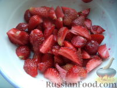
На минимальном огне растопить сливочное масло.
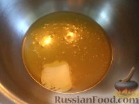
В миску вылить растопленное масло, добавить сахар.
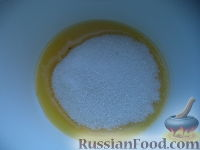
Затем добавить яйца, соль, ванилин и разрыхлитель.
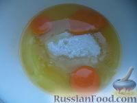
Все тщательно перемешать.
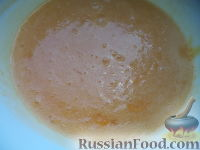
Влить молоко. Перемешать.
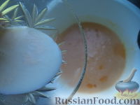
Муку просеять и добавить частями в тесто.
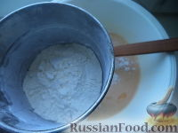
Все тщательно перемешать. Тесто должно быть по консистенции как густая сметана. Если есть необходимость муки добавлять сколько нужно.
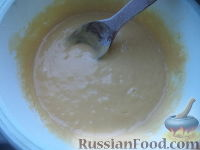
Форму смазать маслом, обсыпать мукой.
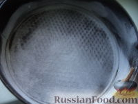
Вылить тесто в форму.
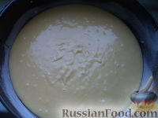
Распределить равномерно клубнику.
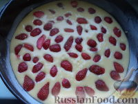
Поместить клубничный пирог в разогретую духовку на среднюю полку.
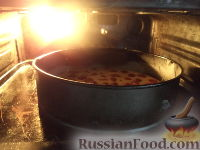
Выпекать пирог с клубникой при 180 градусах до золотистости (30-40 минут).
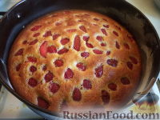
Готовый клубничный пирог остудить, разрезать на кусочки.Приятного аппетита!
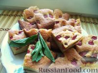
Профитроли
Ингредиенты:
Сливочное масло - 100 г
Щепотка соли
Вода - 250 г
Мука пшеничная - 150 г
Разрыхлитель - 3 г
Яйца - 4-5 шт (общий вес яиц без скорлупы 233 г)
Любой крем (заварной, сливочный, крем-чиз, масляный, шоколадный и тд.)
Повидло, варенье, джем
Паштеты, икра, рыба, ветчина и тд
Приготовление:
Готовим тесто на профитроли с заварным кремом.Нам понадобится вода, сливочное масло, соль, мука, яйца.
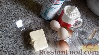
Как приготовить профитроли с заварным кремом:Наливаем стакан воды в кастрюлю и ставим на огонь.
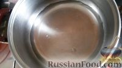
Стакан муки просеиваем.
Масло я растапливаю в микроволновке
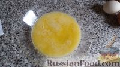
Добавляю масло в воду, туда же соль. Доводим до кипения.
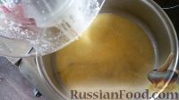
Добавляем в воду с маслом муку, постоянно перемешивая.
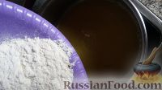
Оставляем минуты на 2 на небольшом огне, хорошо перемешивая тесто. Остужаем.
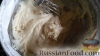
Яйца разбиваем и слегка перемешиваем венчиком.
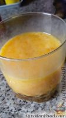
Постепенно вводим яйца в заварное тесто, перемешивая до однородности после каждой порции. (Можно просто добавлять яйца по одному.) Тесто будет как бы делиться на кусочки, но потом образуется однородная масса. Я перемешивала вилкой, слегка наклонив кастрюлю.
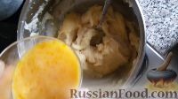
Заварное тесто получается такое, как на фото.
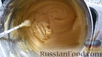
На противень кладем лист пергамента, слегка смазываем маслом.
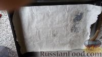
У меня нет кулинарного шприца, и я чайной ложкой выкладываю тесто на противень.Помещаем будущие профитроли минут на 30-35 в духовку, разогретую до 180-200 градусов.
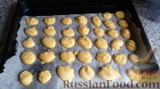
Вот такие профитрольки. Оставляем, пусть остывают.
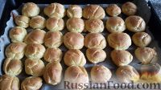
Готовим заварной крем. Молоко выливаем в кастрюлю, доводим до кипения, убираем, чтобы остыло.
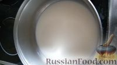
Желтки перемешиваем с мукой, сахаром, ванилином или ванильным сахаром и щепоткой соли.
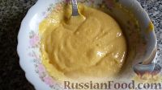
Добавляем в молоко желтковую смесь
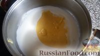
Слегка взбиваем миксером (секунд 20), ставим на медленный огонь на 5 минут. Постоянно помешиваем. Потом накрываем крышкой и убираем в холодильник (подождите, пока крем остынет)
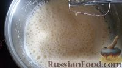
Набираем в шприц заварной крем (у меня обычный медицинский)
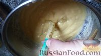
Можно сделать надрез в пирожных и наполнить их кремом с помощью ложки
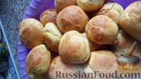
Наполняем заварные пирожные кремом.
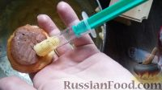
Профитроли с заварным кремом готовы. Приятного чаепития!
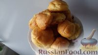
Пломбир
Ингредиенты:
Сливки 33% (холодные) - 300 г
Молоко – 500 мл
Желтки – 5 шт.
Сахар – 150 г
Ванилин – 1 г
Приготовление:
Немного нагреваем молоко с ванилином (или ванильным сахаром, или ванилью).
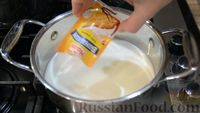
В отдельной ёмкости протираем лопаткой желтки с сахаром.
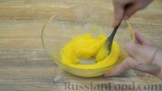
Добавляем часть молока (примерно стакан) к протёртым желткам, перемешиваем до однородности.
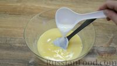
Вливаем полученную смесь к оставшемуся молоку и увариваем до небольшого загустения на маленьком огне, постоянно помешивая.
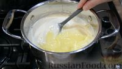
Важно не переварить! По времени сказать сложно. Я уваривала на очень медленном огне около 10 минут. Ориентируйтесь не на время, а на густоту. Как только заварная основа начинает как бы обволакивать лопатку, снимаем с огня и полностью остужаем.
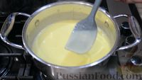
Взбиваем сливки (они должны быть холодными) до «мягких пиков». Взбивать начинаем на медленной скорости, постепенно увеличивая до максимума.Вводим к ним полностью остывшую молочно-яичную смесь.
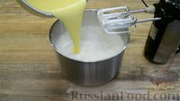
Перемешиваем всё до однородности.Ставим мороженое в морозилку на 30 минут.
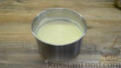
Хорошо пробиваем массу погружным блендером в течение двух-трёх минут, чтобы избавиться от кристалликов льда.Процедуру повторяем трижды: 30 минут замораживаем, хорошо пробиваем блендером и снова на 30 минут в морозилку. Или просто воспользуйтесь мороженицей
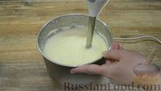
После этого переливаем мороженое в форму и отправляем на полную заморозку
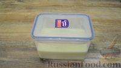
Перед подачей дайте постоять мороженому некоторое время при комнатной температуре. Так настоящий пломбир будет удобнее красиво выкладывать.Если у вас нет специальной ложки для мороженого, её можно заменить обычной - смачиваем ложку в горячей воде, вытираем насухо и набираем мороженое, при этом мороженое само скручивается в красивую трубочку.